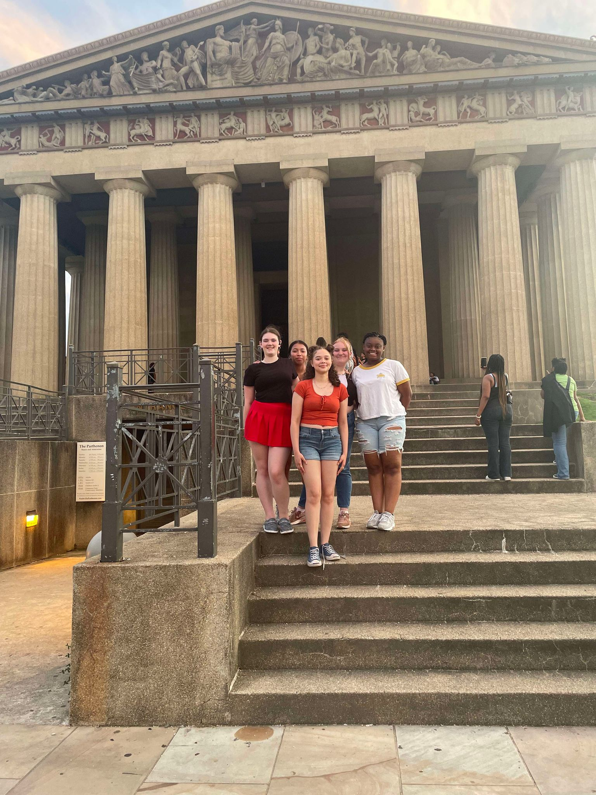

What is ETS?
ETS (Educational talent search) is a program for 6th graders to 12th graders to guide students in post-secondary education and career attainment. Providing students with all the tools they will need once graduating high school.
Educational Talent Search is one of eight federal TRIO Programs funded by the US Department of Education. We serve a minimum of 680 students attending target schools in Clark and Fayette Counties. ETS also serves adults desiring to re-enter and complete their education by attaining a high school diploma or GED and pursuing postsecondary education.
What does ETS offer?
- Free monthly in-school workshops with activities to develop college readiness skills and to identify and pursue career pathways.
- Free events for students and family covering topics like SAT prep, financial aid, and leadership skills.
- Free trips to tour career and technical colleges, community colleges, and public or private institutions. Along with visiting work sites for high-demand careers and trades. During these trips, students will also participate in fun activities offered by businesses and organizations local to the campus/site.
Schools we visit:
Fayette County
-Bryan Station, Crawford, Leestown, Lexington Trad., Morton, Tates Creek, Winburn, and Southern middle schools
-Bryan Station, Dunbar, Henry Clay, Fredrick Douglas, Lafayette, and Tates Creek high schools. STEAM Academy
Clark County:
-Campbell Jr. High
-George Rogers Clark High school

Update your information
Not getting texts or emails about events and trips or hall passes for workshops?
Apply to our program
Not in the program yet? No worries, our online application takes about 10 minutes. Have a parent or guardian with you when filling it out.
Going on a trip with us?
If you’ve registered for a trip and haven’t filled out your paperwork, fill it out here!